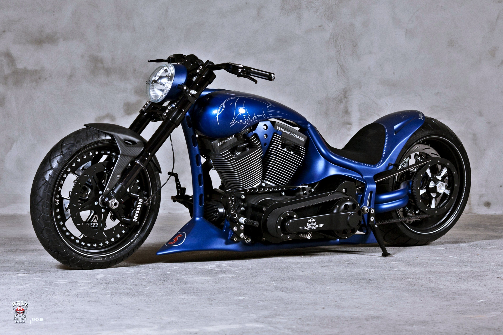

Aceste motociclete sunt destinate preponderent mediului urban si au o forma clasica, generica. Acest tip de motocicleta este recomandat incepatorilor, deoarece sunt manevrabile si in majoritatea cazurilor nu au motoare foarte puternice. Numele naked ale acestor motociclete vine din engleza care inseamna gol. Motocicleta prezinta carenaje reduse, dezvaluind cat mai mult motorul.
Motociclete destinate plimbarilor lungi, in afara oraselor. Saua joasa, ghidonul lat si un motor de cilindree mare, optimizat pentru cuplu maxim la turatii mici arata ca accentul este pus in principal pe confortul motociclistului si mai putin pe performantele sportive.
Un chopper e o motocicleta joasa, cu cadrul alungit si furca rotii este mult mai inclinata. Motoarele folosite sunt preluate de pe cruisere.
Aceste motociclete sunt optimizate pentru viteza si performante sportive, asemanatoare motocicletelor de curse din care sunt derivate. Folosesc motoare puternice de turatie mare, au carene in jurul cadrului pentru reducerea rezistentei la inaintare, frane puternice si impun motociclistului o pozitie specifica, cat mai ascuns in spatele parbrizului si carenelor.